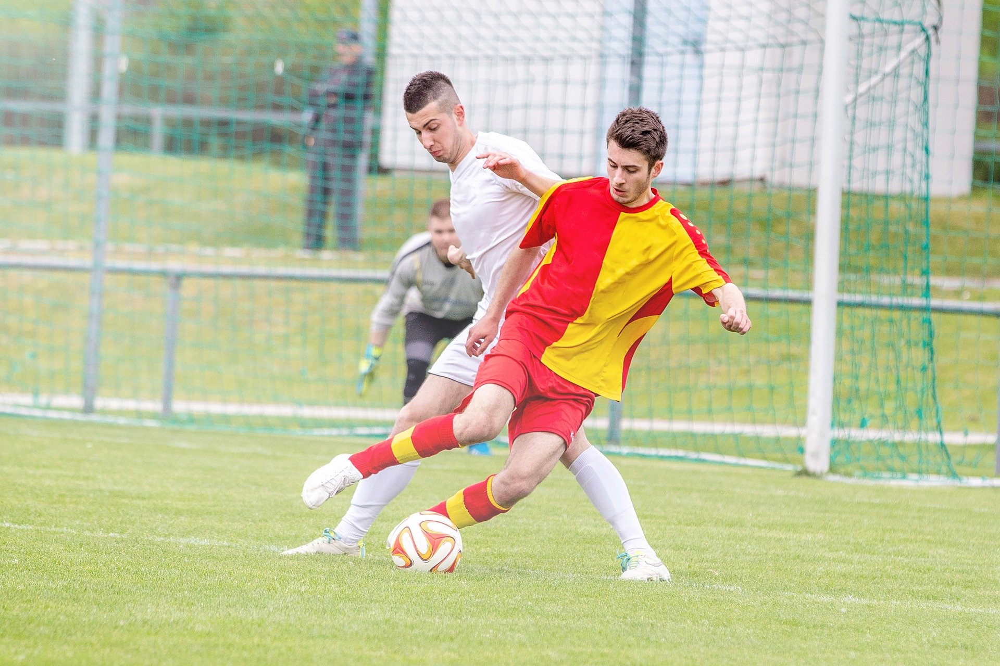

Joris Kayembe
Kayembe, 26, speelt voor Charleroi sinds hij in januari werd gerekruteerd uit Nantes. Sindsdien heeft hij 22 keer een sportshirt gedragen. Zijn optreden dit seizoen trok de aandacht van Rode Duivels-coach Roberto Martinez. Begin oktober speelde hij tegen Ivoorkust in een vriendschappelijke wedstrijd (1-1) en begon hij aan het duel van de nationale ploeg. In november speelde hij ook tegen Zwitserland (2-1) in een vriendschappelijke wedstrijd.
Dein Syria per speciosam interpatet diffusa planitiem. hanc nobilitat Antiochia, mundo cognita civitas, cui non certaverit alia advecticiis ita adfluere copiis et internis, et Laodicia et Apamia itidemque Seleucia iam inde a primis auspiciis florentissimae.
Thalassius vero ea tempestate praefectus praetorio praesens ipse quoque adrogantis ingenii, considerans incitationem eius ad multorum augeri discrimina, non maturitate vel consiliis mitigabat, ut aliquotiens celsae potestates iras principum molliverunt, sed adversando iurgandoque cum parum congrueret, eum ad rabiem potius evibrabat, Augustum actus eius exaggerando creberrime docens, idque, incertum qua mente, ne lateret adfectans. quibus mox Caesar acrius efferatus, velut contumaciae quoddam vexillum altius erigens, sine respectu salutis alienae vel suae ad vertenda opposita instar rapidi fluminis irrevocabili impetu ferebatur.
Isdem diebus Apollinaris Domitiani gener, paulo ante agens palatii Caesaris curam, ad Mesopotamiam missus a socero per militares numeros immodice scrutabatur, an quaedam altiora meditantis iam Galli secreta susceperint scripta, qui conpertis Antiochiae gestis per minorem Armeniam lapsus Constantinopolim petit exindeque per protectores retractus artissime tenebatur.
Dein Syria per speciosam interpatet diffusa planitiem. hanc nobilitat Antiochia, mundo cognita civitas, cui non certaverit alia advecticiis ita adfluere copiis et internis, et Laodicia et Apamia itidemque Seleucia iam inde a primis auspiciis florentissimae. Thalassius vero ea tempestate praefectus praetorio praesens ipse quoque adrogantis ingenii, considerans incitationem eius ad multorum augeri discrimina, non maturitate vel consiliis mitigabat, ut aliquotiens celsae potestates iras principum molliverunt, sed adversando iurgandoque cum parum congrueret, eum ad rabiem potius evibrabat, Augustum actus eius exaggerando creberrime docens, idque, incertum qua mente, ne lateret adfectans. quibus mox Caesar acrius efferatus, velut contumaciae quoddam vexillum altius erigens, sine respectu salutis alienae vel suae ad vertenda opposita instar rapidi fluminis irrevocabili impetu ferebatur. Isdem diebus Apollinaris Domitiani gener, paulo ante agens palatii Caesaris curam, ad Mesopotamiam missus a socero per militares numeros immodice scrutabatur, an quaedam altiora meditantis iam Galli secreta susceperint scripta, qui conpertis Antiochiae gestis per minorem Armeniam lapsus Constantinopolim petit exindeque per protectores retractus artissime tenebatur.